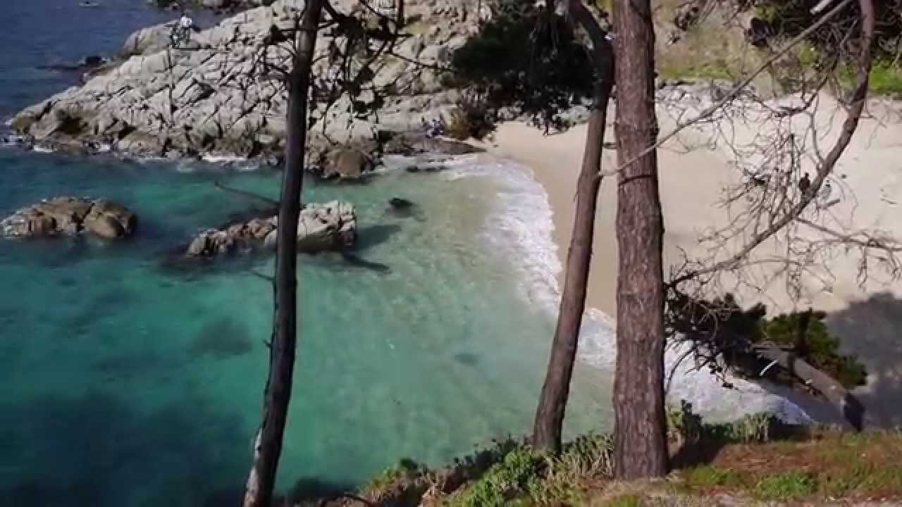
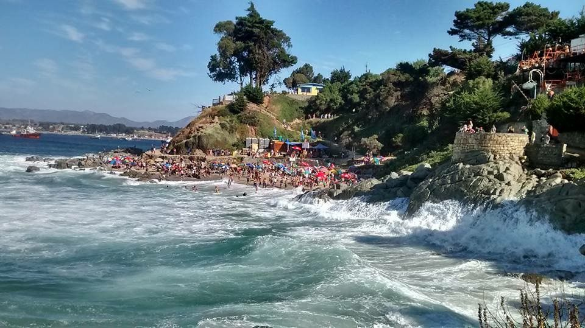
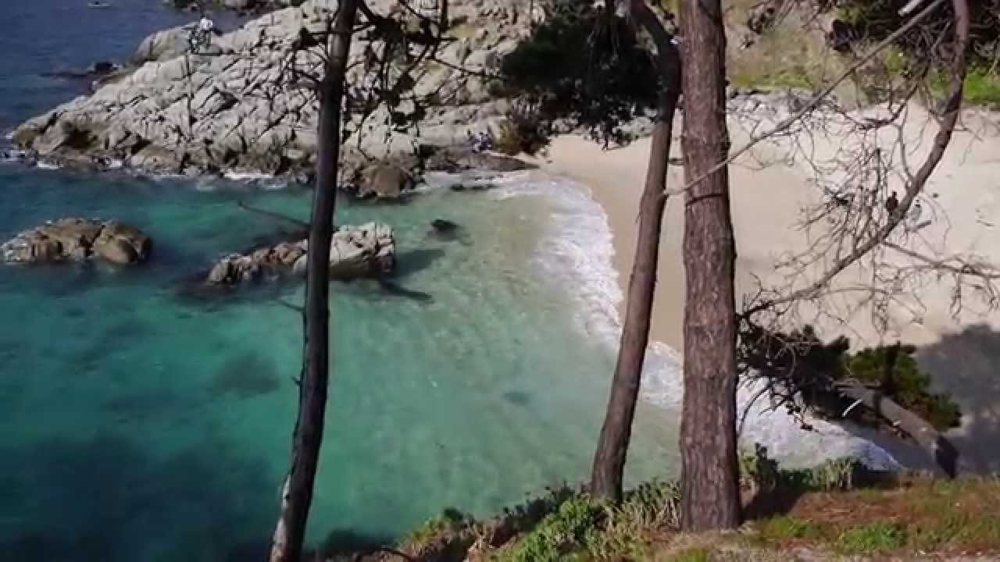
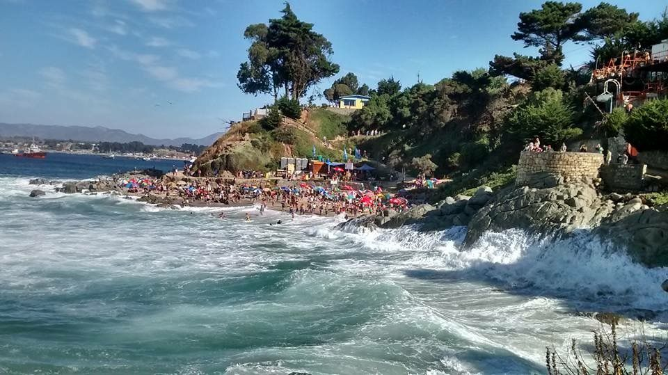

El Sabado 15 de Enero, 2005 se realizo la reunion anual de la Fraternidad, en esta ocacion contamos con la presencia de varios miembros venidos de otros paises, de Quintero y de otros lugares de Chile, entendemos que debido a la epoca, fecha y distancias fue imposible contar con la presencia de mas miembros, algunos de los presentes representaron a otros que no pudieron asistir.
El primer tema y solucion a este, fue el de la directiva que ya cumplidos los dos años de mandato y de acuerdo a los estatutos debia hacerse una eleccion, para acomodar algunos casos especiales ver (*), se hicieron algunos cambios en la estructura del directorio y este quedo conformado de la siguente manera:
Presidente: Francisco Velásquez
Director Tesorero: Fernando Opazo
Director Tesorero y Relacionador Publico: Humberto (tito) Muñoz
Director: Anita Gonzalez
Las funciones de Fernando continuan como antes, el ha sido el contacto directo conmigo, lo que me ha permitido en el pasado darles una informacion mas o menos acertada de los fondos disponibles y algunas informaciones generales pertinentes.
Las funciones de Tito Muñoz, son las de representante de la Fraternidad en Quintero, Tito ademas desde nuestra creacion como entidad, tiene poder junto a Fernando para hacer transacciones bancarias.
Las funciones de Anita de han orientado mas que nada al area social, ella nos ha representado en ocaciones frente al Cotolengo y algunos actos en colegios, gracias Anita por tu colaboracion y bienvenida al directorio.
Mis funciones continuan como antes, representacion, informativas y coordinacion de asuntos pertinentes a la agrupacion.
(*) Marco Cubelli, su exclusion del directorio fue su deseo ya que le solicitamos continuara con la grandiosa labor que a venido desarrollado por estos ultimos cuatro años, pero debido a sus planes de cambio de domicilio a Viña del Mar le es imposible continuar con el cargo. Personalmente agradesco a Marco por la excelente labor incondicional que presto a la Fraternidad durante estos dos periodos en el directorio, mas aun por la labor informativa que atravez de Fernando me hizo llegar durante todo este tiempo, le deseo a el y su familia lo mejor en sus cambios venideros y espero tengan una acogina merecedora en el nuevo medio, estoy confidente de que tanto Marco como su Sra. Cecil continuaran participando en la Fraternidad.
(*) Don Juan Soto, venia cumpliendo con las labores de director pero en la actualidad se encuentra en un estado de salud delicado y por consiguente pretender que continue con estas funciones y compromisos propios del cargo es demasiado, agradesco enormemente las tantas veces que nos acompaño en los diferentes compromsios de la Fraternidad y le deseo una pronta recuperacion.
Cuenta Bancaria: el saldo en la cuenta fue enviado en el ultimo email.
En principio nuestra idea es de ayudar al hospital en forma semestral, cambios de director en el hospital y problemas relacionados impidieron que hicieramos una entrega antes, por consiguente esta fue un poco mas generosa de lo acostumbrado. La entrega de articulos al hospital de Quintero en esta ocacion, nos significo un gasto cercano al millon de pesos.
Alcaldia: Como miembros de una agrupacion comunitaria, con personalidad juridica registrada en el Municipio de Quintero, que participa activamente (principalmente en los veranos) en actividades comunales, enviamos una carta de despedida y agradecimientos al Alcalde saliente don Jose Varas y una de bienvenida al Alcalde electo don Jorge Vargas. Marco Cubelli y yo nos entrevistamos con al Alcalde electo y nos presentamos como entidad que trabaja en beneficio de nuestra comuna, especificamente del hospital de Quintero.
AGRADIS: Este verano contamos con dos sillas de ruedas, un par de muletas, 24 pares de lentes opticos de lectura y otros 20 pares usados donados por diferentes amigos de la Fraternidad, estos fueron entregados a Agradis inmediatamente despues de la reunion de Enero, con esta donacion alcanzamos un total de 9 sillas entregadas hasta la fecha, varios pares de muletas mas los lentes opticos (44 pares) que ahora son parte de una campaña que seguiremos apoyando en beneficio de la agrupacion Agradis. Aqui quiero hacer extensiva la invitacion de juntar lentes opticos (nuevos o usados) para entregar a Agradis, organismo que por haberse ganado una subencion de gobierno, esta fomentando el apoyo oftalmologico a la comunidad Quinterana.
Semana Quinterana:
Por los ultimos tres años, la F.I.Q. ha regalado la corona y los premios para las tres candidatas finalistas.
El Municipio tambien nos pidio la cooperacion como entidad para apoyar las actividades de la semana Quinterana, a esta peticion respondimos regalando mas de 30 poleras (del Instituto del cancer de Canada) las que fueron entregadas como recuerdo a los medios de comunicacion invitados a la conferencia de prensa del dia de la presentacion de candidatas y como premios para los diferentes eventos organizados durante la semana.
Cruz Carvajal, relacionadora publica del Municipio de Quintero hizo llegar sus agradecimientos por la cooperacion prestada.
Ayuda al hospital: El Doctor Sr. Miguel Melivilu es el nuevo director del hospital de Quintero, junto a Humberto Muños, fuimos a conversar con el y a la vez aprovechamos de visitor el hospital, en la seccion maternidad nos mostraron una carpeta en la cual guardan un record de las poleras entregadas a madres con recien nacidos, (poleras que regalamos el verano 2004) en vista de tal organizacion y buena acogida de estas entre las madres, volvimos a regalar otras 30 poleras las que seguiran siendo entregadas de la misma manera.
Como lo hemos hecho en años anteriores, solicitamos al Director nos diera una lista de articulos/ materiales que fuesen de primera necesidad para el hospital, una vez que recivimos esta lista, atravez de Fernando Opazo se pidieron cotizaciones y eventualmente procedimos a la compra de varios items que el dia 19 de febrero 2005 y en una ceremonia en la que participamos varios miembros de la Fraternidad (ver foto) que se encontraban en Quintero, entregamos al Doctor, Director del hospital.
En esta ocacion, nuestro amigo y fraterno Hector Contreras en su nombre y el de su hermano Eduardo que reside en Noruega, hicieron un reconocimiento al hospital y su gente por las atenciones prestadas a su madre en los momentos anteriores a su fallecimiento, Hector y Eduardo Contreras, regalaron un manometro mas de los que el hospital habia solicitado en su lista de peticiones.
Mi padre y fraterno a su regreso a Canada (fines de Mayo, 2005), tambien dejara al hospital el manometro que esta usando en la actualidad, siendo este excactamente igual al que regalaron los hermanos Contreras y los dos entregados por la Fraternidad, con esto hacemos una entrega de cuatro manometros en total, (el hospital nos habia pedido dos).
El Sr. Melivilu en esta ocacion agradecio a la Fraternidad por esta entrega (ver fotos) y tambien lo hizo atravez de una carta abierta al Mercurio de Valparaiso.
Lista de articulos comprados y entregados al hospital:
2 - Manometros, con humidificador y nariceras (controlan el flujo de Oxigeno entregado al paciente)
2 - Manometros, con humidificador y nariceras regalados por miembros de la Fraternidad en forma individual.
2 - Esfingomanometro de mercurio + estetoscopio (marcadores de presion sanguinea)
1 - Oximetro de pulso (mediciones de Oxigeno en la sangre)
3 - Accu-check, con tiras y lancetas (medicion de azucar en la sangre)
2 - Ambu (poveen aire en proceso de resucitacion)
El hospital atravez de sus empleados, el grupo de amigos y los Municipios de Puchuncavi y Maintencillo, organizaron un Rodeo en la media luna de Puchuncavi, evento que se realizo para juntar fondos en miras de comprar una ambulancia para el hospital de Quintero, nuestra participacion fue apoyando una de las candidatas a reina del rodeo, (regalamos dos microhondas los que fueron entregados como el primer premio del Champion, poleras para que las rifaran o las vendieran y traducir el dinero a votos, las candidatas eran tres, la que apoyamos no fue la ganadora pero el fin que se perseguia se consiguio reuniendo una cifra cercana a los 5 millones de pesos.
Marzo 2005, actividades solidarias:
Miembros de la Fraternidad fueron invitados a asistier a ceremonias en la escuela Municipalizada #200, en el Politecnico y el pequeño Cotolengo.
Escuela Municipalizada #200: Se entregaron tres balones de basketball y dos de soccer.
Politecnico: Se entregaron tres balones de basketball y dos de soccer.
Pequeño Cotolengo: Mi madre y Anita Gonzalez visitaron el pequeño Cotolengo, y ayudados por otros voluntarios de la comunidad, preparon y dieron onces a todos los niños que alli se encontraban, tambien se les regalaron poleras.
Nota: los balones y poleras entregados son articulos que han sido donados por la Universidad de Alberta y el Instituto del Cancer de Canada.
Nuevos Miembros:
Piotr Koper: Hijo de Rosa Elena y Wladyslaw (Bayo) Koper, Piotr hace un tiempo que viene participando en la Fraternidad, principalmente haciendo pagos de cuotas, espero algun dia pueda viajar y encontrarse en alguna de nuestras reuniones.
Hugo y Teresa Cisterna: Amigos residents en Quintero y dueños de los restaurantes Cocina de TeuH, cooperadores y activos participantes en las actividades de la comunidad Quinterana.
Bernabe Vilaxa: Amigo de siempre, forma parte de una extensa familia Quinterana, alumno del entonces Liceo de Hombres, en la actualidad Bernabe reside en Santiago, sus visitas a Quintero son frecuentes.
Manuel Morales: despues de viajar por el mundo, Don Manuel decidio radicarse en su pueblo del alma, escuchar sus melodies en Arpa y guitarra es un deleite, con frecuencia se le escucha en la cocina de Teuh.
Alexis Ocampo: Alexis, primo de Fernando Opazo, se incorporo a la Fraternidad por que le gusta la labor que hacemos y es para el una manera de apoyar la comunidad Quinterana.
Bienvenidos todos uds., espero verlos en la proxima reunion de Enero.
Cada vez que un amigo se une a nuestra causa, trae con esto la esperanza de un mejor hospital para Quintero, una mejor comuna para todos nosotros y quienes la visitan.
Donaciones y otros:
Juegos de camisetas, pantalones y medias de soccer: La Asociacion de Soccer Pierre Fonds de Montreal, Canada, atravez de nuestro fraterno Ignacion Astete nos hizo llegar dos juegos de uniformes de soccer, juveniles completos (camisetas, pantalones y medias).
Sillas de ruedas y walker: en mi poder tengo dos sillas de ruedas y un walker, articulos que con mis padres llevaremos en nuestro proximo viaje, estas se entregaran a AGRADIS inmediatamente despues de la reunion de Enero 2006.
Balones de soccer (infantiles) y un posible trofeo (adultos): Don Luis Caro, amigo de la Fraternidad y dueño del restaurante Chileno en Edmonton "Churros King" me ofrecio algunos balones de soccer y posiblemente un trofeo para ser disputado durante la proxima semana Quinterana, esperamos el ofrecimiento se concrete y asi poder apoyar nuevamente el deporte comunal.
Corona y premios para las proximas candidatas a reina, semana Quinterana 2006: mis padres, hermanas, hijos, y sobrinos nuevamente regalaran los premios para este evento.
Lentes Opticos (nuevos o usados) ya estamos en campaña para recolectar lentes usados atravez de amigos y gente conocida, les pido tengan esta idea en mente y guarden los lentes viejos y/o traten de conseguirse otros con amigos que ya no necesitan de ellos. Los lentes recolectados, junto a las sillas de ruedas y el walker se entregaran a AGRADIS despues de la reunion de Enero 2006.
Mis agradecimientos a: Marco Cubelli por todo el tiempo que dedico fielmente a representar nuestra Fraternidad en Quintero.
Juan Soto por las tantas labores representativas comunales que efectuo durante su periodo de director.
Ignacio y Luzmira Astete por hacer llegar una maleta llena de poleras a Chile, estas se entregaron a instituciones como el Hospital, Municipio, Politecnico, Cotolengo y otros.
Mis viejos por acarrear hasta hoy ocho sillas de ruedas y unos cuantos pares de muletas que han sido entregadas a AGRADIS.
Rosa Elena Koper por las coronas y premios entregados durante los ultimos tres años a las candidatas a reina de la semana Quinterana.
Feliz Koper por acarrear maletas con poleras, sillas de ruedas, muletas y otros articulos desde el aeropuerto de Santiago a Quintero.
A todos los que conforman este grupo de amigos que cada dia esta haciendo una pequeña diferencia en nuestro Quintero.
 


